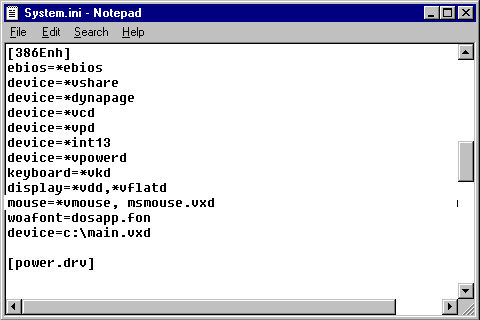
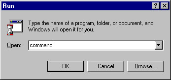
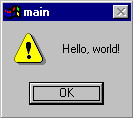

Steward
分享是一種喜悅、更是一種幸福
驅動程式 - Windows Virtual Device Driver (VxD) - 使用範例 - Assembly (MASM611) - Hello, world!
參考資訊：
https://github.com/steward-fu/ddk
main.asm
.386p
include c:\95ddk\inc32\vmm.inc
include c:\95ddk\inc32\shell.inc
DECLARE_VIRTUAL_DEVICE MAIN, 1, 0, MAIN_CONTROL, UNDEFINED_DEVICE_ID, UNDEFINED_INIT_ORDER
BEGIN_CONTROL_DISPATCH MAIN
CONTROL_DISPATCH CREATE_VM, OnVMCreate
END_CONTROL_DISPATCH MAIN
VXD_PAGEABLE_DATA_SEG
MsgTitle db "main",0
MsgContent db "Hello, world!",0
VXD_PAGEABLE_DATA_ENDS
VXD_PAGEABLE_CODE_SEG
BEGINPROC OnVMCreate
vmmcall get_sys_vm_Handle
mov eax, MB_OK + MB_ICONEXCLAMATION
mov edi, OFFSET32 MsgTitle
mov ecx, OFFSET32 MsgContent
xor esi, esi
xor edx, edx
vxdcall shell_message
ret
ENDPROC OnVMCreate
VXD_PAGEABLE_CODE_ENDS
end
main.def
VXD MAIN
SEGMENTS
_LPTEXT CLASS 'LCODE' PRELOAD NONDISCARDABLE
_LTEXT CLASS 'LCODE' PRELOAD NONDISCARDABLE
_LDATA CLASS 'LCODE' PRELOAD NONDISCARDABLE
_TEXT CLASS 'LCODE' PRELOAD NONDISCARDABLE
_DATA CLASS 'LCODE' PRELOAD NONDISCARDABLE
CONST CLASS 'LCODE' PRELOAD NONDISCARDABLE
_TLS CLASS 'LCODE' PRELOAD NONDISCARDABLE
_BSS CLASS 'LCODE' PRELOAD NONDISCARDABLE
_LMGTABLE CLASS 'MCODE' PRELOAD NONDISCARDABLE IOPL
_LMSGDATA CLASS 'MCODE' PRELOAD NONDISCARDABLE IOPL
_IMSGTABLE CLASS 'MCODE' PRELOAD DISCARDABLE IOPL
_IMSGDATA CLASS 'MCODE' PRELOAD DISCARDABLE IOPL
_ITEXT CLASS 'ICODE' DISCARDABLE
_IDATA CLASS 'ICODE' DISCARDABLE
_PTEXT CLASS 'PCODE' NONDISCARDABLE
_PMSGTABLE CLASS 'MCODE' NONDISCARDABLE IOPL
_PMSGDATA CLASS 'MCODE' NONDISCARDABLE IOPL
_PDATA CLASS 'PDATA' NONDISCARDABLE SHARED
_STEXT CLASS 'SCODE' RESIDENT
_SDATA CLASS 'SCODE' RESIDENT
_DBOSTART CLASS 'DBOCODE' PRELOAD NONDISCARDABLE CONFORMING
_DBOCODE CLASS 'DBOCODE' PRELOAD NONDISCARDABLE CONFORMING
_DBODATA CLASS 'DBOCODE' PRELOAD NONDISCARDABLE CONFORMING
_16ICODE CLASS '16ICODE' PRELOAD DISCARDABLE
_RCODE CLASS 'RCODE'
EXPORTS
MAIN_DDB @1
編譯
C:\> c:\95ddk\masm611c\ml.exe -coff -c -Cx -DMASM6 -DBLD_COFF -DIS_32 main.asm C:\> c:\95ddk\msvc20\link.exe -vxd -def:main.def main.obj
安裝方式是修改C:\Windows\System.ini(添加main.vxd)

重新開機後，開啟Command

完成
